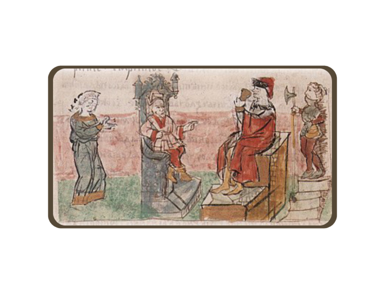
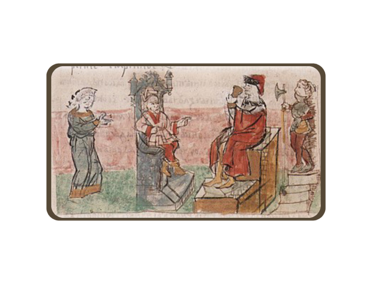

ПРАВИЛА

 

Прибыв ко двору польского короля из ДИНАСТИИ ПЯСТОВ,
Вы очаровывайте монарха и придворных своим знанием языка и обычаев. Польский король выделяет Вам и князю лучшие покои в своем
замке, а также положительно отвечает на Ваше предложение о военном союзе.
Впечатленный Вашим дипломатическим даром и даром ТОЛМАЧА,
князь не может сдержать своего восхищения. После аудиенции у польского короля Вы возвращайтесь в свои покои, куда Вам приносят
княжеский вышитый пояс в качестве знака высшей признательности.
Так, Вы не просто завоевали уважение своего князя, но и снискали его милость, что, конечно же,
не применет сказаться на Вашем статусе и положении как при иноземных дворах, так и
при будущем дворе Вашего князя.